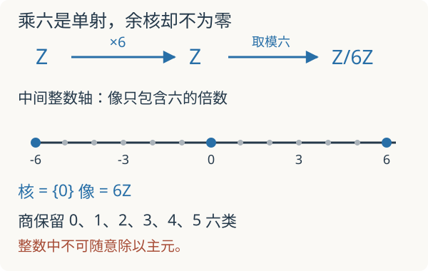

本页目录
基础衔接 01 · 从向量空间到模：除法失效以后
本讲要解决：为什么熟悉的“选基、消元、数维数”到了整数上会失灵？先修：线性空间、环与域。完成后应能计算核、像、商，并解释一条短正合列为何未必分裂。
1. 一条不能除以二的方程
在实数中，\(2x=1\) 有解；在整数中没有。高斯消元里“用主元除这一行”的动作，因此不能不加检查地搬到整数上。我们需要保留向量加法与标量作用，却放弃每个非零标量都可逆的要求。
本路线的环 \(R\) 均为含单位的交换环。一个 \(R\)-模 \(M\) 是带有标量乘法的交换群，满足分配律、\((rs)m=r(sm)\) 和 \(1m=m\)。当 \(R\) 是域时，这正是向量空间。\(\mathbb Z\)-模就是交换群：整数作用由反复相加及取负决定。线性映射也保留下来，但现在要求 \(f(rm)=rf(m)\)，称为模同态。
例如 \(\mathbb Z/6\mathbb Z\) 是 \(\mathbb Z\)-模。元素 \([1]\) 非零，却有 \(6[1]=0\)。这里把被非零整数杀死的元素称为挠元。这在实向量空间里不可能发生：若 \(av=0\) 且 \(a\ne0\)，乘 \(a^{-1}\) 就得 \(v=0\)。一般含零因子的环上，“挠”的约定需要另外说明；本讲只在整数模上使用该词。
2. 生成元不一定是基
\([1]\) 能生成 \(\mathbb Z/6\mathbb Z\)，但不是一组自由基，因为 \(6[1]=0\) 给出非平凡关系。自由模 \(R^n\) 的每个元素有唯一的 \(n\) 个坐标；商模则可以用“生成元加关系”描述。
给定子模 \(N\subset M\)，把相差一个 \(N\) 中元素的两个向量认作相同，得到商模 \(M/N\)。若 \(f:M\to P\) 是同态，映射
是同构。【证明】换代表元时相差核中的元素，所以像不变；像相等时差在核中，所以映射单射；每个像元素按定义都有原像，所以满射。证明只用加法和同态，完全不需要除法。
现在看 \(f:\mathbb Z\to\mathbb Z\)，\(f(n)=6n\)。它的核为零、像为 \(6\mathbb Z\)，但余核是 \(\mathbb Z/6\mathbb Z\)。把同一个矩阵 \([6]\) 看作实数矩阵，余核却变成零。写矩阵之前必须说明系数环，否则“这个方程是否可解”都可能答错。

3. 正合是什么意思，为什么还不能拆开
序列 \(A\xrightarrow{u}B\xrightarrow{v}C\) 在 \(B\) 处正合，是指 \(\operatorname{im}u=\ker v\)。先做 \(u\) 再做 \(v\) 必为零，只给出一个包含关系；正合还要求所有被 \(v\) 杀死的元素都来自 \(u\)。
因此
是短正合列：左箭头单射，右箭头满射，中间的核恰好是 \(6\mathbb Z\)。它却不分裂。假如有同态 \(s:\mathbb Z/6\mathbb Z\to\mathbb Z\) 满足 \(q\circ s=\mathrm{id}\)，那么
整数中只有零被六杀死，故 \(s([1])=0\)，与 \(q(s([1]))=[1]\) 矛盾。可以为每个剩余类选代表元 \(0,\ldots,5\)，但这种集合上的选择不保持加法：\([5]+[1]=[0]\)，而 \(5+1\ne0\)。向量空间中依靠补基得到的分裂，在模中不能默认成立。
4. 算例：整数消元允许做什么
考虑关系矩阵
做列操作 \(C_2\leftarrow C_2-2C_1\)，得到 \(\operatorname{diag}(2,6)\)。这个操作的逆仍是整数操作，因而仅改变关系的生成方式，没有改变像。所以
共有 12 个元素。不能把第一行除以二来宣布关系变成单位矩阵：除二在整数模中不是可逆换基。一般的 Smith 标准形使用整数可逆行列变换，把整数矩阵化为满足整除关系的对角形式；这里完成了一个实例，未证明一般算法。
交互中研究 \(T_a:[x]\mapsto[ax]\) 在 \(\mathbb Z/m\mathbb Z\) 上的作用。先预测“\(a\) 非零”是否保证可逆。若 \(d=\gcd(a,m)\)，写 \(a=da'\)、\(m=dm'\)，则 \(m\mid ax\) 等价于 \(m'\mid x\)，所以核有 \(d\) 个元素，像有 \(m/d\) 个。可逆条件是 \(d=1\)。
静态练习：取 \(m=6,a=2\)，逐个计算 \(x=0,1,\ldots,5\) 的像，再找重复。
默认核为 \(\{[0],[3]\}\)，像为 \(\{[0],[2],[4]\}\)；像序列为 \(0,2,4,0,2,4\)。图上的连线仅帮助追踪有限映射，不表示连续函数。
5. 独立验收：不能只认得定义
题一。 在 \(\mathbb Z/8\mathbb Z\) 上乘六，核、像分别是什么？
核对完整计算
\(6x\equiv0\pmod8\) 等价于 \(3x\equiv0\pmod4\)，故核为 \(\{0,4\}\)。逐个乘六得到像 \(\{0,2,4,6\}\)。商 \((\mathbb Z/8)/\ker T_6\) 有四个元素，与像同构；它不是整个八元素模。
题二。 判断 \(0\to\mathbb Z\xrightarrow{\times2}\mathbb Z\xrightarrow{q}\mathbb Z/4\to0\) 是否正合，\(q\) 为模四映射。
核对失败位置
不正合，甚至不是链复形：\(q(2\cdot1)=[2]\ne0\)。中间像为 \(2\mathbb Z\)，核为 \(4\mathbb Z\)，两者不等。把第一箭头改为乘四才得到短正合列。不能因为首尾有零就叫正合列。
6. 接下来这些工具用在哪里
局部化会允许某些标量可逆，改变哪些信息还能被看见；链复形会把核与像串起来；向量丛和层则会把模随空间位置组织起来。当前只建立模、商与正合性，不等于已经学完交换代数。
速查与下一步
| 工具 | 要检查的条件 |
|---|---|
| 商模 \(M/N\) | \(N\) 必须是子模 |
| 正合 | 前一像等于后一核，不只是包含 |
| 自由模 | 坐标唯一，生成元之间无非平凡关系 |
| 整数换基 | 变换及其逆都保持整数坐标 |
下一讲：局部化与局部信息。定义与进一步理论见 Stacks Project：交换代数 的 Modules、Quotients、Localization 各节；本讲整数算例均可直接复算。资料核查：2026-09-08。